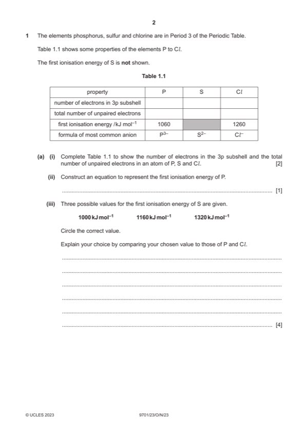

Question 1

Original paper page 2
Part 1(a)(i) — solution
total # 3p e– 3 4 5 1
total # unpaired e– 3 2 1 1
Mark points
- Include the ideas shown in the solution above.
Part 1(a)(ii) — solution
- P(g) → P+(g) + e(–) 1
Mark points
- P(g) → P+(g) + e(–) 1
Part 1(a)(iii) — solution
Answer: OR · OR
1000 (kJmol−1) 1
(S) less / least / lowest nuclear attraction (to outer electrons) (than P OR Cl) 1
OR
nuclear attraction for Cl is stronger (compared to S (and or P))
S less nuclear charge than Cl 1
OR
Cl has a greater nuclear charge than S
(S has a greater nuclear charge (of outer electrons) than P BUT) 1
S has two electrons in a (3)p orbital AND resulting in spin-pair repulsion
Mark points
- Correct result: OR
- Correct result: OR
Part 1(b)(i) — solution
- 1s2 2s2 2p6 3s2 3p6 1
Mark points
- 1s2 2s2 2p6 3s2 3p6 1
Part 1(b)(ii) — solution
● decreases (from P3− to Cl−) 2
● increased attraction (of outer e−) for nucleus owtte
● increased nuclear charge
● same shielding
●√●√
2023 Page 9 of 15
9701/23 Cambridge International AS & A Level – Mark Scheme October/November 2023
Mark points
- Include the ideas shown in the solution above.
Part 1(c) — solution
Answer: OR · OR
(Br2) no visible reaction 1
OR
colourless to orange / brown / yellow solution
(conc. H2SO4) no visible reaction 1
OR
Solution remains colourless
(dil. AgNO3) white precipitate forms 1
Mark points
- Correct result: OR
- Correct result: OR
Part 1(d)(i) — solution
(relatively low melting and boiling points suggests) weak intermolecular / VdW forces 1
(vigorous reaction with water suggests) hydrolysis 1
Mark points
- Include the ideas shown in the solution above.
Part 1(d)(ii) — solution
- POCl3 + 3H2O → H3PO4 + 3HCl 1
Mark points
- POCl3 + 3H2O → H3PO4 + 3HCl 1
Part 1(d)(iii) — solution
Answer: 1
1
Correct bonding e−
rest of electrons correct (i.e. to make 32 electrons in total) 1
2023 Page 10 of 15
9701/23 Cambridge International AS & A Level – Mark Scheme October/November 2023
Mark points
- Correct result: 1
Part 1(e)(i) — solution
enthalpy change when one mole of a compound / substance is formed 1
from its constituent elements in their standard states 1
Mark points
- Include the ideas shown in the solution above.
Part 1(e)(ii) — solution
Answer: OR
- 2(–592) = 2(–289) + (496) – 2(P=O) 1
- (2) P=O = 2(–289) + (496) + 2(592)
- EP= O = ½(1102) = +551 (kJ mol−1) 1
Mark points
- 2(–592) = 2(–289) + (496) – 2(P=O) 1
- (2) P=O = 2(–289) + (496) + 2(592)
- EP= O = ½(1102) = +551 (kJ mol−1) 1
Part 1 — solution
one COOH group AND correct carbon framework (5C’s)
(each C has the correct valency)
both COOH groups 1
Mark points
- Include the ideas shown in the solution above.